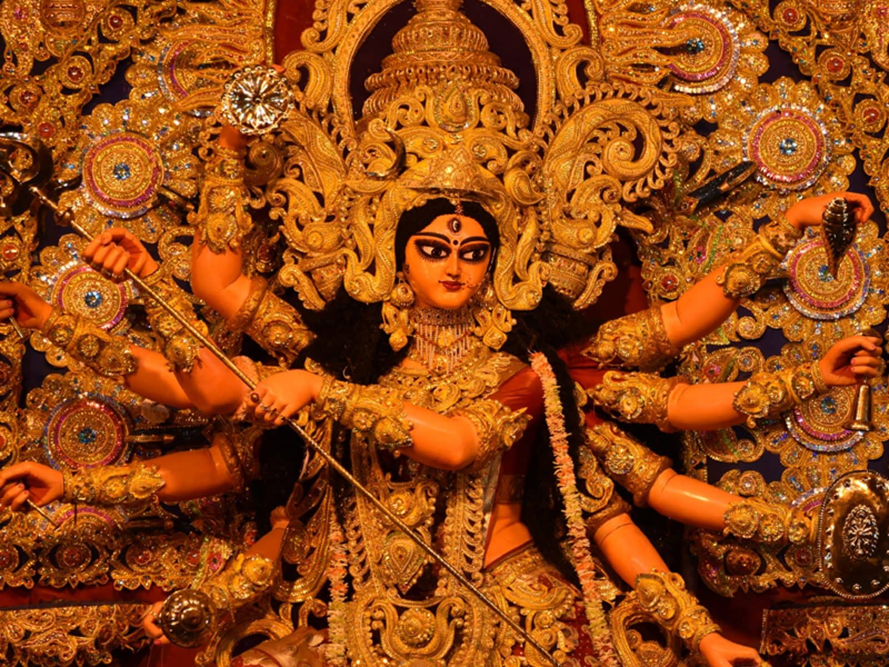

The Battle with Mahishasura
This is the central and most well-known
mythological story associated with Durga Puja. According to Hindu mythology,
the demon king Mahishasura, who could change his form from human to buffalo,
became almost invincible due to a boon from Lord Brahma which states that no men
can kill him with any kind of astra (weapon).like He wreaked havoc on the earth, and the gods
were unable to defeat him. In response to their plead Tridev (Brambha, Visnu, Shiva)
created Goddess Durga from their energy and gave her all their powers and weapons along with
the other gods. Like Lord Shiva gave her a Trishul (trident)n, Lord Vishnu gave her a Chakra (discus),
Lord Indra gave her a Vajra (thunderbolt), Himavan, the personification of the Himalayas, gifted a lion as her
mount and so on. Wielding such strength and weapons, she waged a fierce
battle against Mahishasura for nine days and nights and eventually defeated and killed him
on the tenth day, which is celebrated as Vijayadashami or Dussehra and became 'MAHISHASURMARDINI'.
